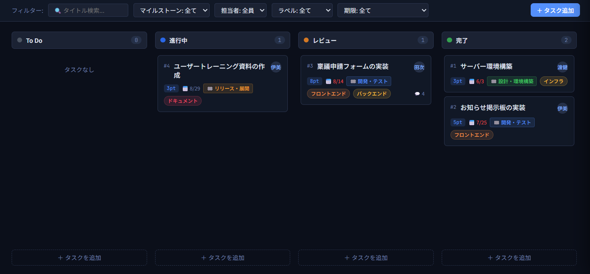
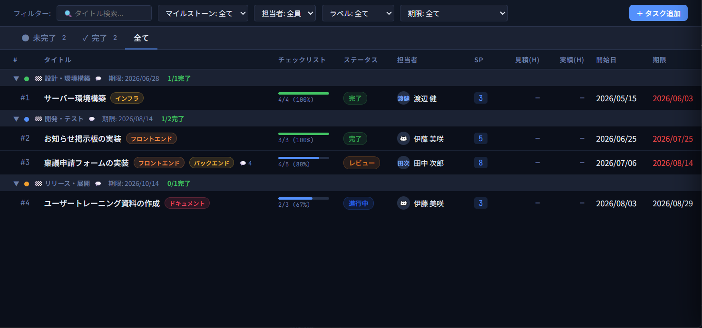
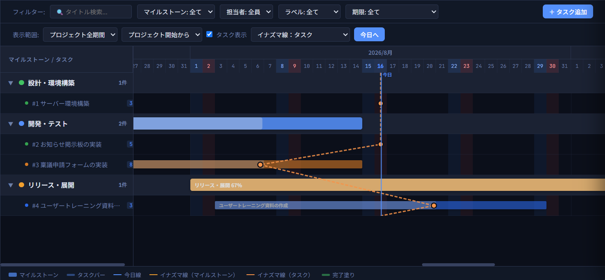
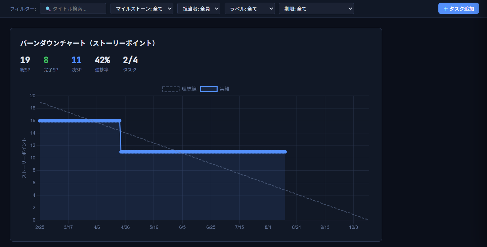
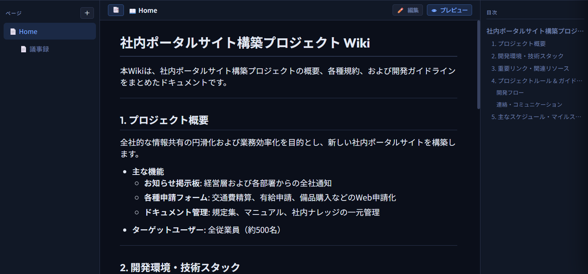
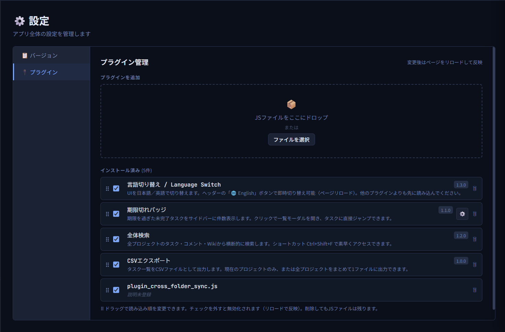

ステータス別カード管理。カード間のドラッグ&ドロップで簡単移動。
マイルストーン別・ソート・フィルタ・ドラッグ並び替え対応の一覧表示。
バーをドラッグで日程調整。イナズマ線・土日祝・今日線表示。
スプリント進捗をリアルタイム可視化。理想線との乖離を即確認。
Markdown複数ページ対応。仕様書・設計書をプロジェクトと一元管理。
taskflowzero.html を1ファイルだけダウンロード。ZIP展開も不要。
taskflowzero.html ← これだけでOK
Chrome または Edge でファイルをダブルクリック。フォルダを選択して「✨ 新規作成」。
任意のフォルダ/ ├── taskflowzero.html └── project_P1.json ← 自動生成
共有フォルダ（OneDrive・NAS 等）を選択するだけで全員が同じデータを参照・編集。
共有フォルダ/ ├── project_P1.json ├── project_P2.json └── files/ ← 添付ファイル
plugin/ フォルダにドロップするか、
GUI の「🔌 プラグイン」からドラッグ&ドロップでインストール。
自作プラグインの作り方は PLUGIN_DEVELOPER_GUIDE.txt を参照

HTMLファイル1つ。クレジットカードも登録も不要。
ブラウザで開くだけで、すぐに使えます。
対応ブラウザ: Chrome / Edge · MIT + Commons Clause